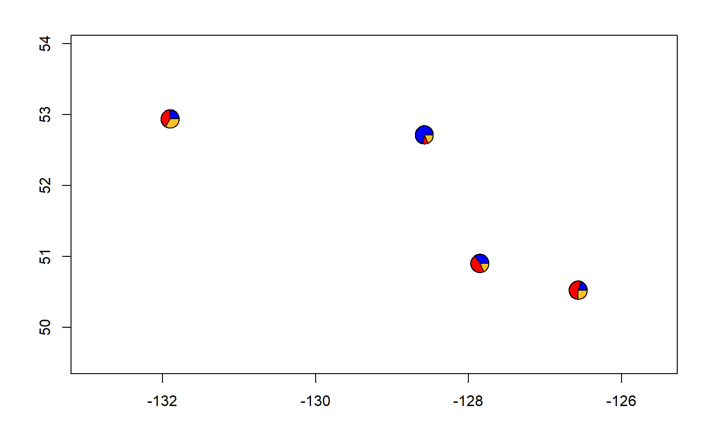
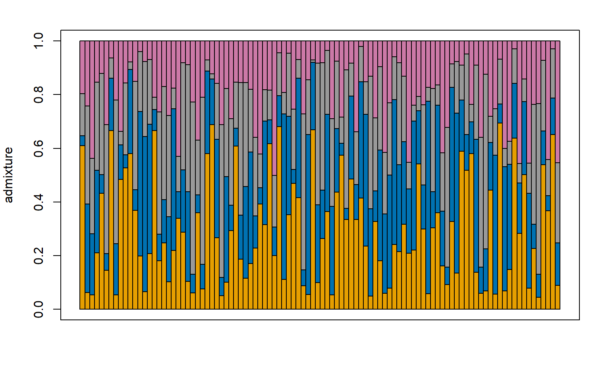
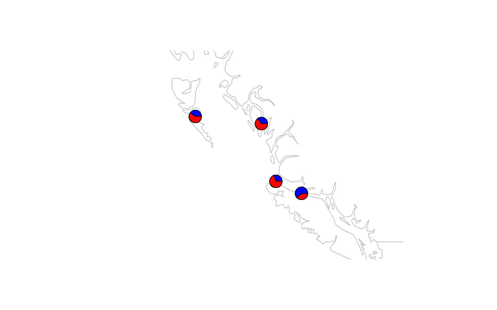

13 Population Structure via conStruct
For this week we will be exploring another way to document population genetic structure (the first way we covered was PCA in Week 8) via a “Structure” plot implemented in the R package conStruct.
conStruct itself has a nice series of tutorials with example data that you can find here
We’ll be using data from the Xuereb et al. paper on P. californicus. This data consists of a vcf file that is in structure format and contains SNP data (3699 SNPs) from 717 individuals (this is the same data we used for our PCA plot in week 9 for pcadapt, and for week 11 for GEA).
The lecture for this week can be found here and describes the basics of a structure plot.
13.1 Download the data
We’ll be using data from the Xuereb et al. paper on P. californicus. This data consists of a vcf file that is in structure format and contains SNP data (3699 SNPs) from 100 individuals (this is the same data we used for our PCA plot in week 9 for pcadapt, and for week 11 for GEA, just with fewer individuals for this week).
We’ll download a metafile as well that has sample coordinates and names
wget https://raw.githubusercontent.com/BayLab/MarineGenomicsData/main/week12_semester.tar.gz
tar -xzvf week12_semester.tar.gz13.2 update our compiler in bash/UNIX and install everything for R in the terminal (in bash/UNIX, NOT in Rstudio)
We need to follow this guide here
# first run this to get the compiliers
sudo apt-get install -y libxml2-dev libcurl4-openssl-dev libssl-dev libv8-dev
#Then install tidyverse into R from the terminal
sudo R
install.packages('tidyverse')
# then exit R with q() and save your workspace image
# now go back into R through the terminal and do the following
sudo R
remove.packages("rstan")
if (file.exists(".RData")) file.remove(".RData")
# now check that we have the compilers we need
pkgbuild::has_build_tools(debug = TRUE)
# if you see a 'TRUE' then you can go on to the next step, installing rstan
install.packages("rstan", repos = "https://cloud.r-project.org/", dependencies = TRUE)13.3 install conStruct in R
Now that we have rstan installed we should be able to go into Rstudio and install conStruct (you could also stay in the terminal and run install.packages (“conStruct) there if you want.)
13.4 read in the data
This first step reads in our file which is in structure format and converts it to conStruct format (there are lots of file formats in population genetics, isn’t it fun?)
We need to make sure that we have the file coding right and this can be confirmed by looking at the structure file in bash to make sure that our samples start at the 3rd row and 3rd column and that our missing data is encoded as a -9.
You can do the above by using wc -l to find the number of lines in the structure file.
conStruct.data <- structure2conStruct(infile="filtered_3699snps_100indcalifornicus.recode.strct_in",
onerowperind = TRUE,
start.loci = 3,
start.samples = 3,
missing.datum = -9,
outfile = "Construct_100inds")13.5 Get our meta data read into R and ready to use
This file contains the lat and lon of our samples as well as the site name and individual id.
For conStruct we can make an object that contains the lat and lon and has the site name as the row names.
#read in the data
meta<-read.table("californicus_metadata.csv", header=T, sep=",")
#pull out the lat and lon and put it in a new matrix object
sites<-as.matrix(meta[-c(51:667), c("LAT", "LONG")])
#assign row names that are the site id for each sample
rownames(sites)<-meta$SITE[-c(51:667)]13.6 Run a structure analysis
We now have our data read into conStruct and converted to conStruct format and our site information from the metadata in a matrix format.
We can now run a structure analyses. For these analyses we chose a value of K (the number of clusters) and typically run the analyses for a range of K (2:7 for example).
We’ll run K = 2 through K = 4 and then we’ll do some model comparison to discuss whether one of these is “better” than the other.
And we’ll only run it with 1 chains and 10 iterations. This is simply so that the program runs quickly within our class time. For a “real” analysis you’d want to run more than one chain (2-5) and iterations up to 1000. It’s important to compare the different chains to ensure the analyses converges, as described here
my.run <- conStruct(spatial = FALSE,
K = 2,
freqs = conStruct.data,
geoDist = NULL,
coords = sites,
prefix = "Sea_cucu_K2",
n.chains = 1,
n.iter = 10,
make.figs=F)
my.run <- conStruct(spatial = FALSE,
K = 3,
freqs = conStruct.data,
geoDist = NULL,
coords = sites,
prefix = "Sea_cucu_K3",
n.chains = 1,
n.iter = 10,
make.figs=F)
my.run <- conStruct(spatial = FALSE,
K = 4,
freqs = conStruct.data,
geoDist = NULL,
coords = sites,
prefix = "Sea_cucu_K4",
n.chains = 1,
n.iter = 10,
make.figs=F)
my.run <- conStruct(spatial = FALSE,
K = 5,
freqs = conStruct.data,
geoDist = NULL,
coords = sites,
prefix = "Sea_cucu_K5",
n.chains = 1,
n.iter = 10,
make.figs=F)This step produces several output files (a conStruct.results file and a data.block file) called after whatever you put in the prefix = section (sea_cucu_K3 in our case). We need to load that output file back into R to access all the things it produced.
Let’s just look at the first one for k = 3.
#load the construct results file
load("Sea_cucu_K3_conStruct.results.Robj")
#pull out the admix proportions from this results file
admix.props<- conStruct.results$chain_1$MAP$admix.proportions
#load the data block file
load("Sea_cucu_K3_data.block.Robj")
# make a structure plot
make.structure.plot(admix.proportions = admix.props,
sample.names=row.names(sites),
mar = c(4,4,2,2))
#let's also make a pie chart
make.admix.pie.plot(admix.proportions = admix.props,
coords = data.block$coords,
mar = c(4,4,2,2))
13.7 Incoorporate geographic distances in a spatial model
One of the main advantages of using conStruct is the ability to incorporate within the model measures of geographic distance.
Let’s do that for our K = 3 from above.
First we need to calculate the geographic distance between our samples. There are many ways to do this, but we’ll take a simple approach of calculating the euclidean (straight-line) distance between each site.
#first install and then load the package geosphere
#install.packages("geodist")
library("geodist")
#we'll use the function distm and the method distHaversine, which is the shortest distance between two points
geo_dist<-geodist(sites, measure="haversine")
#now we can put the distance into our conStruct analyses
my.run <- conStruct(spatial = TRUE,
K = 3,
freqs = conStruct.data,
geoDist = geo_dist,
coords = sites,
prefix = "Sea_cucu_K3_dist",
n.chains = 1,
n.iter = 10,
make.figs=T)
#>
#> SAMPLING FOR MODEL 'space_multiK' NOW (CHAIN 1).
#> Chain 1:
#> Chain 1: Gradient evaluation took 0.01 seconds
#> Chain 1: 1000 transitions using 10 leapfrog steps per transition would take 100 seconds.
#> Chain 1: Adjust your expectations accordingly!
#> Chain 1:
#> Chain 1:
#> Chain 1: WARNING: No variance estimation is
#> Chain 1: performed for num_warmup < 20
#> Chain 1:
#> Chain 1: Iteration: 1 / 10 [ 10%] (Warmup)
#> Chain 1: Iteration: 2 / 10 [ 20%] (Warmup)
#> Chain 1: Iteration: 3 / 10 [ 30%] (Warmup)
#> Chain 1: Iteration: 4 / 10 [ 40%] (Warmup)
#> Chain 1: Iteration: 5 / 10 [ 50%] (Warmup)
#> Chain 1: Iteration: 6 / 10 [ 60%] (Sampling)
#> Chain 1: Iteration: 7 / 10 [ 70%] (Sampling)
#> Chain 1: Iteration: 8 / 10 [ 80%] (Sampling)
#> Chain 1: Iteration: 9 / 10 [ 90%] (Sampling)
#> Chain 1: Iteration: 10 / 10 [100%] (Sampling)
#> Chain 1:
#> Chain 1: Elapsed Time: 0.101 seconds (Warm-up)
#> Chain 1: 0.092 seconds (Sampling)
#> Chain 1: 0.193 seconds (Total)
#> Chain 1:
#remake our structure plots
#load the construct results file
load("Sea_cucu_K3_dist_conStruct.results.Robj")
admix.props<- conStruct.results$chain_1$MAP$admix.proportions
#load the data block file
load("Sea_cucu_K3_dist_data.block.Robj")
# make a structure plot
make.structure.plot(admix.proportions = admix.props,
sample.names=row.names(sites),
mar = c(4,4,2,2))
#and a pie chart
make.admix.pie.plot(admix.proportions = admix.props,
coords = data.block$coords,
mar = c(4,4,2,2))
13.8 Comparisons across different values of K
You may want to show a single structure plot for one value of K and may want that one plot to be the “best” fitting model for your data.
There are a few ways to do this, however most often there’s not a single “best” model and care should be taken as models with more parameters often appear to be a better fit, but are not necessarily more biologically meaningful.
The vignette here has several ways in which you can choose an “optimal” K or several K here
Note that the vignette on layer contributions only works with a spatial conStruct analyses.
13.9 Exercises
- change the colors in the plot. THe default red and blue for K = 2 is not very friendly for those with color blindness. Using the command
?make.structure.plotdetermine how you would change the colors and then using this site choose color-blind-friendly colors. Make a strucutre plot for K = 2 and K = 4 using your new colors.
Solution
#first check how to do this
?make.structure.plot()
###### For K = 2 ############
#load the construct results file
load("Sea_cucu_K2_conStruct.results.Robj")
admix.props<- conStruct.results$chain_1$MAP$admix.proportions
#load the data block file
load("Sea_cucu_K2_data.block.Robj")
# make a structure plot
make.structure.plot(admix.proportions = admix.props,
layer.colors = c("#E69F00", "#0072B2"),
mar = c(4,4,2,2))
###### For K = 4 ############
#load the construct results file
load("Sea_cucu_K4_conStruct.results.Robj")
admix.props<- conStruct.results$chain_1$MAP$admix.proportions
#load the data block file
load("Sea_cucu_K4_data.block.Robj")
# make a structure plot
make.structure.plot(admix.proportions = admix.props,
layer.colors = c("#E69F00", "#0072B2", "#999999", "#CC79A7"),
mar = c(4,4,2,2))
- Make a pie-chart that overlays on a map. You will find a guide for doing this here
Solution
#first load your data
load("Sea_cucu_K2_conStruct.results.Robj")
admix.props<- conStruct.results$chain_1$MAP$admix.proportions
#load the data block file
load("Sea_cucu_K2_data.block.Robj")
# make the desired map
maps::map(xlim = range(data.block$coords[,1]) + c(-5,5), ylim = range(data.block$coords[,2])+c(-2,2), col="gray")
# add the admixture pie plot
make.admix.pie.plot(admix.proportions = admix.props,
coords = data.block$coords,
add = TRUE)